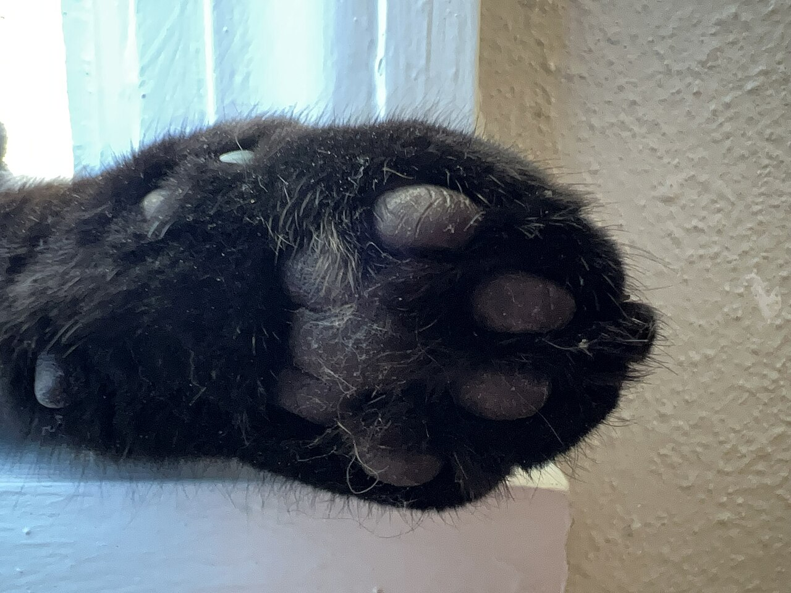
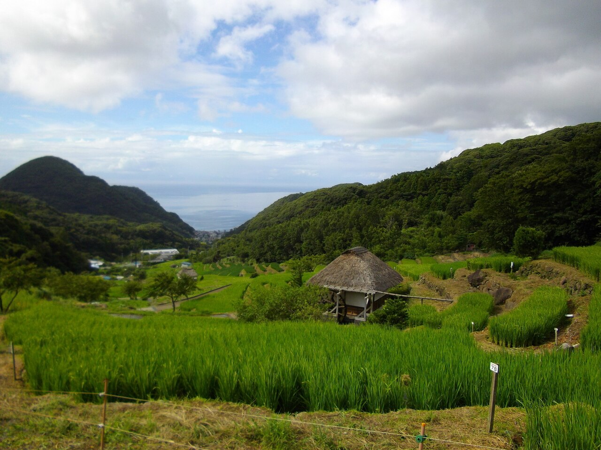

トリミングサロンキュート(猫・小型犬)
猫・小型犬のトリミングサロン

基本情報
| 屋号 | トリミングサロンキュート(猫・小型犬) |
|---|---|
| 業種 | トリミングサロン(猫・小型犬) |
| 所在地 | 〒425-0077 静岡県焼津市五ケ堀之内263-1 |
| 電話 | 090-3839-7595 |
| @trimmingsaloncute | |
| 営業時間 | 準備中(お問い合わせください) |
| 定休日 | 準備中(お問い合わせください) |
| 予約方法 | 準備中(お問い合わせください) |
| 駐車場 | 準備中(お問い合わせください) |
| スタッフ | 準備中(お問い合わせください) |
スタッフ・こだわり
準備中(お問い合わせください)
このサイトのデザインについて
このサイトの配色(墨色とマスタード黄)と構成は、「やさしい静けさの、小さなサロン」というイメージで制作側が考えた案です。お店の理念や店名の意味を表すものではありません。
